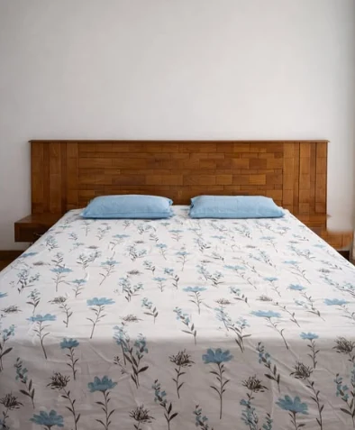
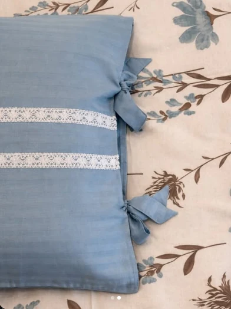
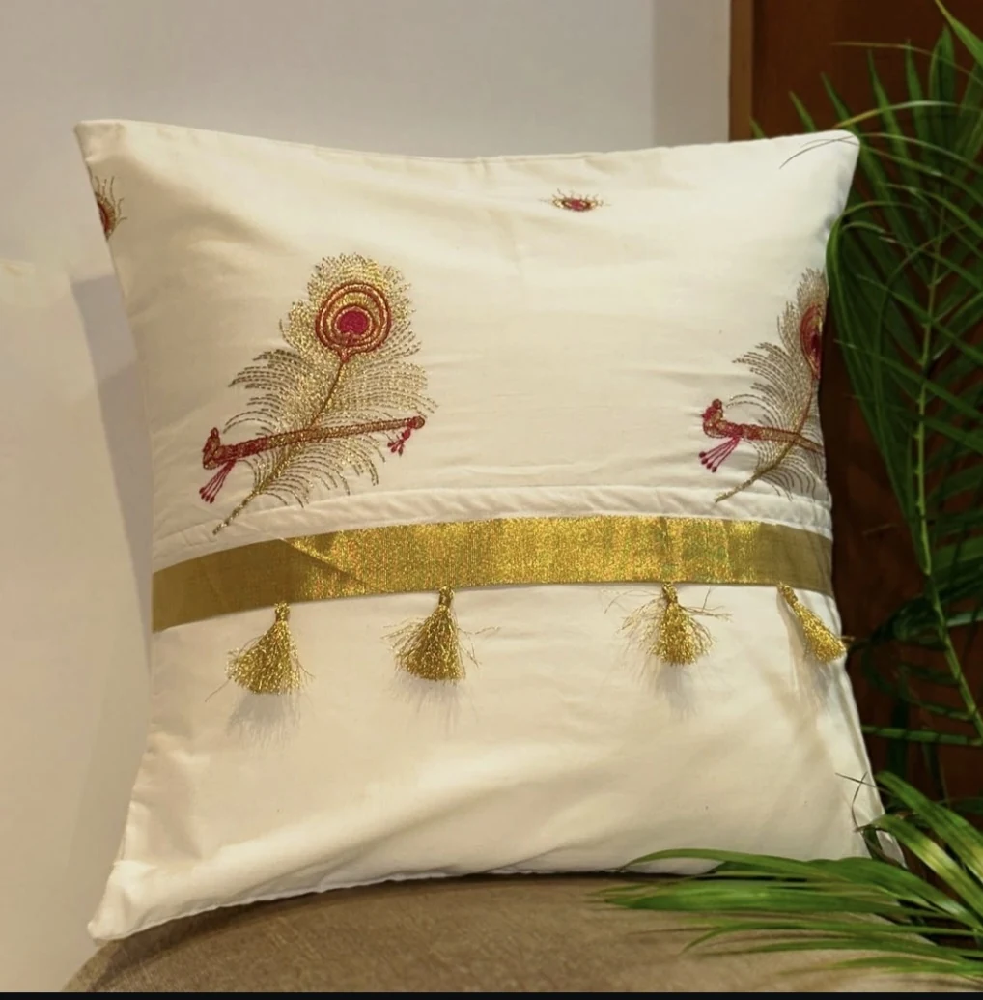
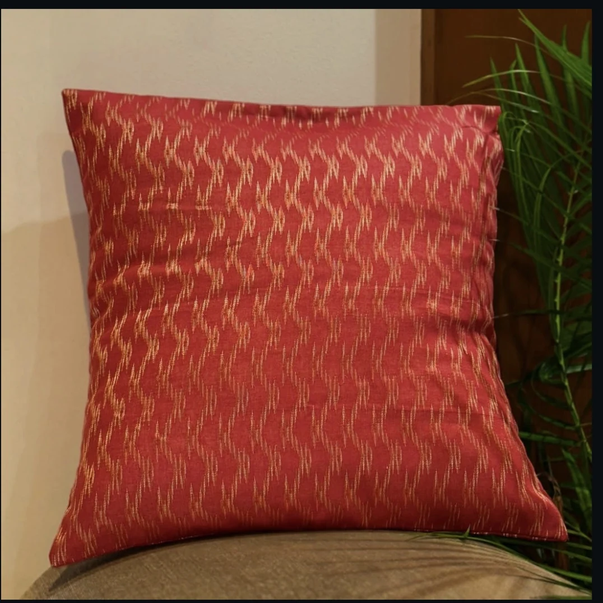
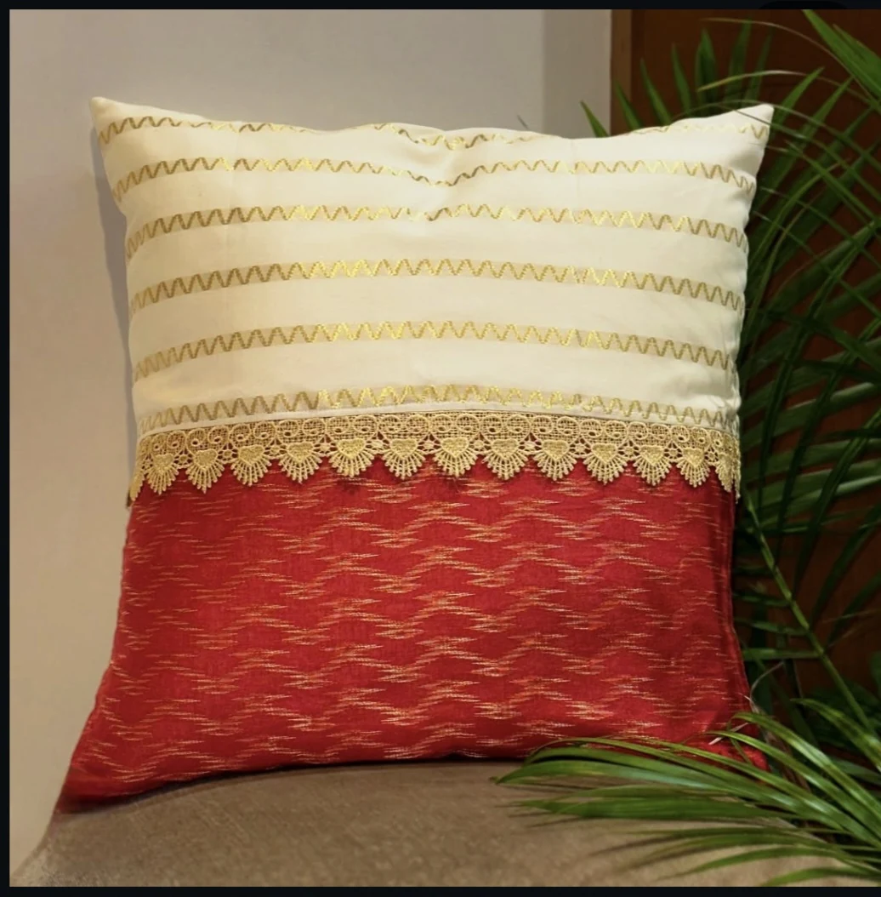
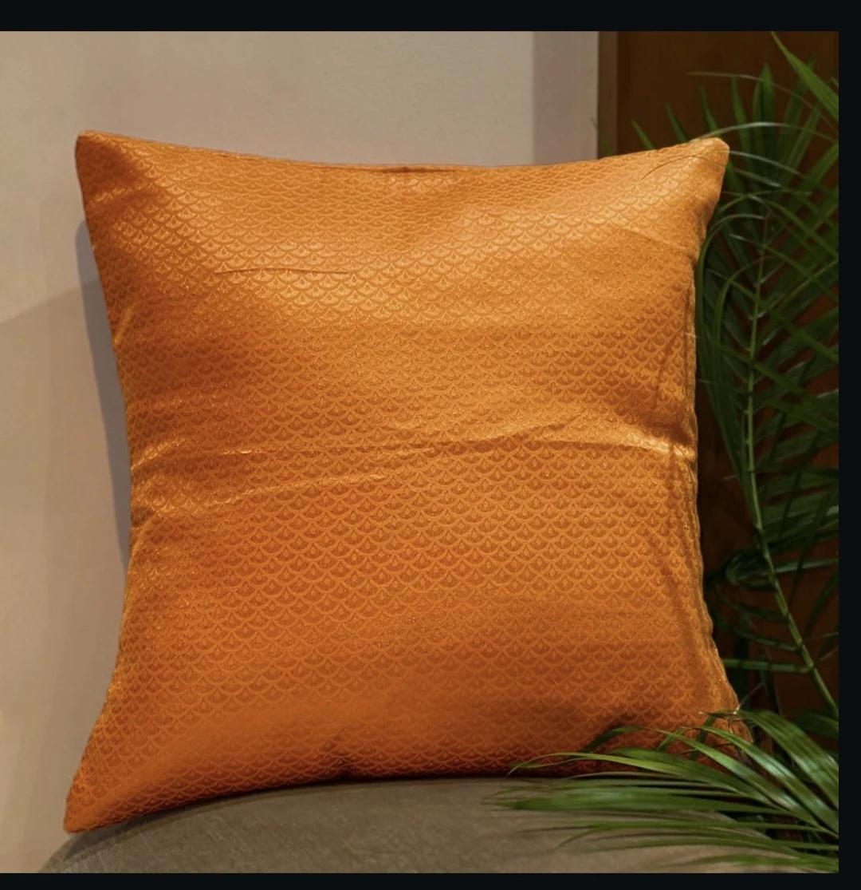
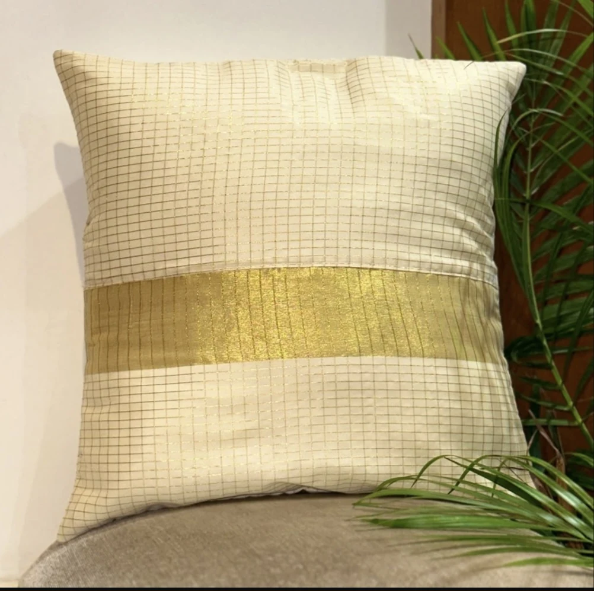
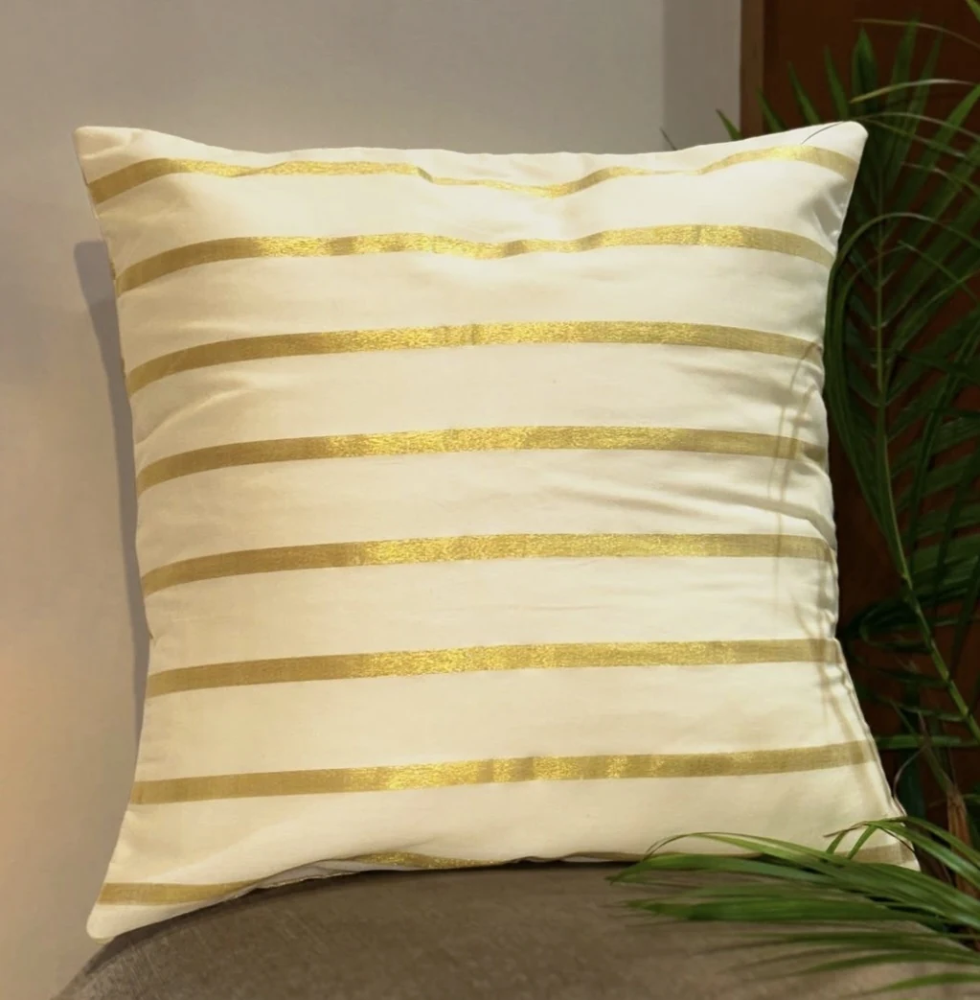
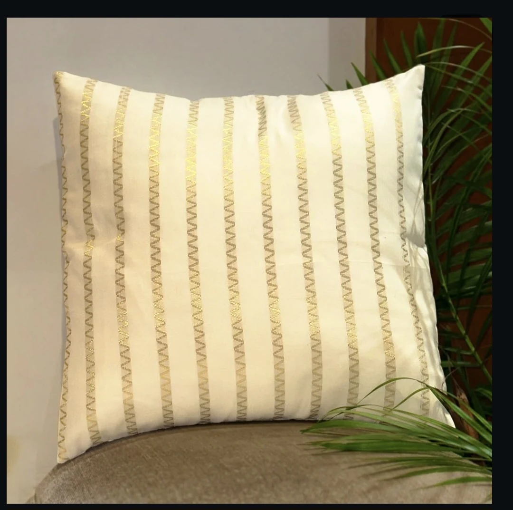
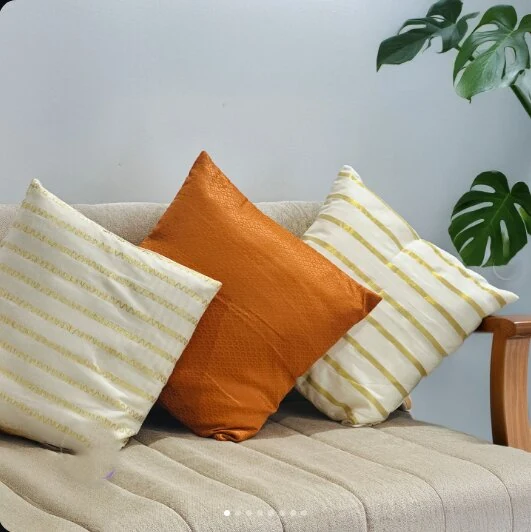

Curating an alchemy of signature brownies—decadently dark and artisanally crafted. From our rich cocoa dough kneaded with patience to the slow-baked golden cookie crowns that seal each brookie's heart. Meticulously kneaded. Baked in small, quiet batches.
A harmonious meeting of two worlds: crisp golden chocolate chip cookie crust crowning a dense, melt-in-mouth dark fudge brownie core.
Infused with sea salt flakes, roasted nuts, and origin chocolate notes—because one indulgence is never enough.
Handcrafted linens, royal Kasavu weaves, and bespoke embroidery — woven with memory and care.

Pure cotton · Archival lace edging · Hand-tied ribbons

Every pillow sham is finished by hand — cotton lace stitched along the border and soft ribbon ties knotted at each corner. The kind of quiet detail that makes an heirloom.

Peacock Embroidery
Peacock Embroidery

Crimson Brocade

Scalloped Lace Diptych

Saffron Raw Silk

Royal Kasavu Band

Horizontal Kasavu

Vertical Chevron Kasavu

Mix and match for your space.
Kasavu · Brocade · Embroidery · Saffron Silk
"Curating an alchemy of signature brownies—decadently dark and artisanally crafted. Beside them, the quiet elegance of heartfelt stitching, woven with memory and care."
Kochumagique was born from a singular conviction: that true luxury lies in patience, precision, and honesty of materials.
Meticulously kneaded. Carefully tailored.
— A symphony of two passions, soon coming home to you. —